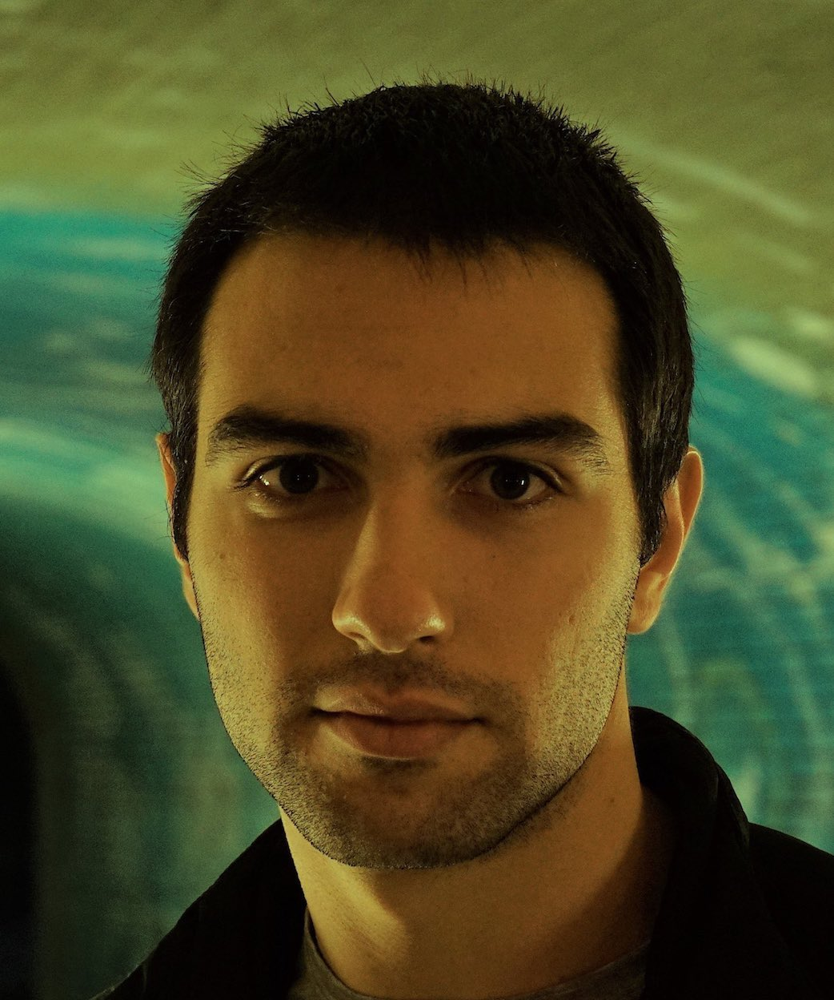
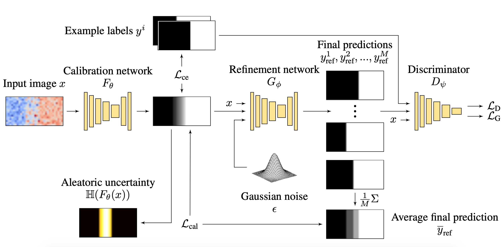
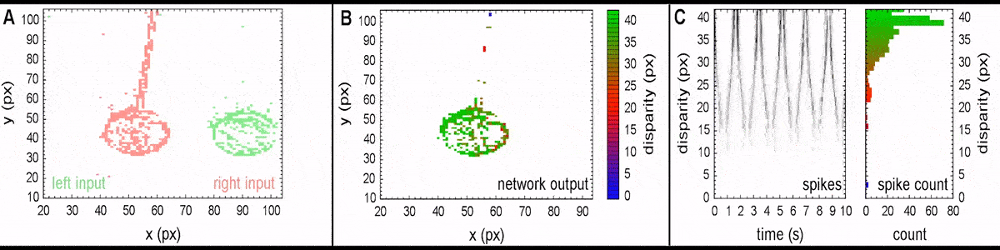
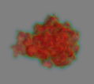
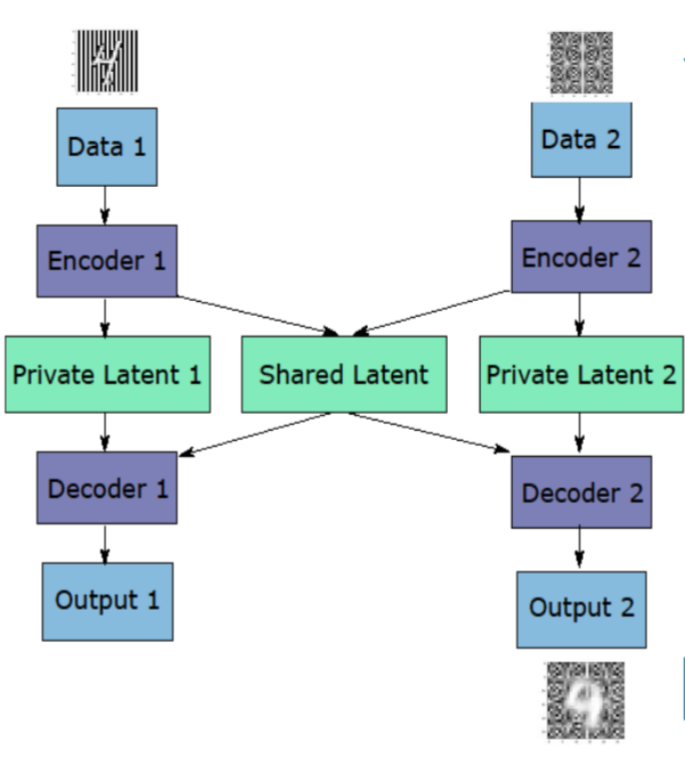

About

I think of myself primarily as an engineer with a sense of appreciation for science and mathematics.
Machine learning, being in the intersection of those, has driven my career plans ever since my early
undergraduate studies. Among other topics I am quite interested in the interplay of generative and
discriminative models, probabilistic inference and representation learning.
If you are curious what keeps me busy at day and occasionally at night, visit my research page below.
I grew up in Sofia, Bulgaria and I remember having a very social childhood, mostly because computers
and internet weren't so ubiquitous at the time (somewhere in the late 90s and early 2000s). This
taught me to value relationships with people and identify authenticity. Perhaps as a consequence,
I also developed a natural desire to read books, learn foreign languages and explore the world.
Today you can probably find me somewhere in Amsterdam, working, learning, climbing or simply enjoying myself
in the company of my soulmate.
Research
Calibrated stochastic semantic segmentation
Meta
This work was a cornerstone in my ML career as it was the first project that I had
the opportunity to supervise. Kudos to my student
Elias Kassapis for his great work!
The project was also co-supervised by my colleague Cedric Nugteren
from TomTom and Deepak Gupta from the University of Amsterdam.
Summary
We endow conventional image segmentation networks \(F\) with the ability to predict multiple
hypotheses \((y^1, y^2, \dots y^M)\) for the same input \(x\). First we train \(F\) to maximise a
pixel-wise categorical likelihood over the data. Then we train adversarially a stochastic refinement
network \(G\) together with a discriminator \(D\) to produce consistent segmentation maps.
In the same time, the variety in the output of \(G\) is controlled by a calibration loss
mechanism \(\mathcal{L}_\text{cal}\) that reuses the output of \(F\).
The image below summarises the approach in a worked example of an ambiguous problem, segmenting red from
blue pixels, given conflicting labels. Notice that the output of \(F\) can be used to compute the
per-pixel uncertainty in the data, while the task of \(G\) is to sample realistic segmentation proposals.

This type of ambiguous segmentation problems occur naturally in many applications, such as
medical image diagnostics, autonomous driving and map making to name a few. Check out the paper
for more detailed explanations or this reimplementation
for a quick start using an illustrative bimodal regression example.
Bayesian learning of neural network depth and width
Meta
This work was a significant part of my Master thesis project, supervised by
Justin Bayer at the
Volkswagen ML research lab.
Summary
The search for better network architectures can be very computationally demanding because
the evaluation of each configuration requires network building, retraining and validation.
We propose an approximate network architecture search by learning the layer size and network
depth in parallel to training.
This is done by framing the search problem as a probabilistic inference. Using the tools of
approximate variational learning and concrete distributions we can learn distributions over the
architectural parameters, updated continuously with each backpropagation step. The following animation
shows how the mean and the variance of the estimated layer size changes over time.

In our paper we apply this technique on fully Bayesian networks for regression, image classification
or value function estimation in contextual bandits. For a high level overview of the approach,
have a look at my blog post linked above.
On the utility and vulnerability of sanitised geolocation datasets
Meta
In my last year as a graduate student, I did a three month research internship at
Ecole Polytechnique in Paris, in the lab Comète headed by
Catuscia Palamidessi.
My work contributed to the research of
Adriano Di Luzio.
Summary
The anonymity of location-based sensitive data can be compromised if some data samples stand out from the rest.
Differential privacy is a mechanism to prevent this, e.g. by obfuscating the data samples with noise such that
statistics about a large group of individuals are not heavily influenced.
This work explores how much noise is required to prevent an adversary from deanonymising traces of people,
while maintaining the utility of the dataset for other research purposes.
To this end, we have trained recurrent neural networks to assign traces to individuals and evaluated the
utility in mobile hotspot and gossip protocols with and without the protection of a geo-indistinguishability mechanism.
The results are rather interesting! It turns out that existing noise obfuscation approaches are not powerful enough to
preserve anonymity without rendering the datasets unusable, at least from the point of view of the tested protocols.
Stereo vision with spiking neural networks
Meta
This work was done as part of my Bachelor thesis and later extended to a publication. It was supervised by
Christoph Richter.
Summary
Neuromorphic hardware refers to devices which mimic the function of biological neural systems.
In this work we implement a spiking neural network for stereo matching, emulated on a massively parallel,
densely connected, low power computer called SpiNNaker. The inputs were streamed from two dynamic vision sensors,
aka silicon retina cameras.
The main challenge consisted in representing the estimated disparity between the left and right camera streams
as simple gates of spiking neurons, while maintaining scalability and efficiency to allow real-time computation.
The video below shows the input streams as perceived by the retina sensors and the estimated disparity at any moment of time.

Honourable mentions
Protein function prediction
(Paper |
Code)

Convolutional neural networks for protein function prediction from 3D physical fields such as
electron density and electrostatic potential.
This work was a collaboration with my colleague and friend
Atanas Mirchev.
Siamese variational autoencoders (Code)

Variational autoencoders applied on two data modalities with a partitioned latent space to
accommodate the common and the independent features between the two data sources.
This allows to generate mixed data points by sampling from the inferred shared latent space
from one of the branches and the private latent space from the other. See the example image on the right.